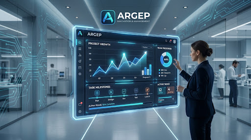
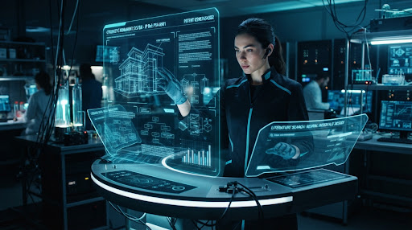
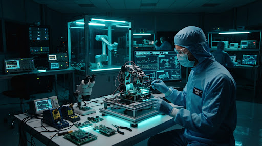
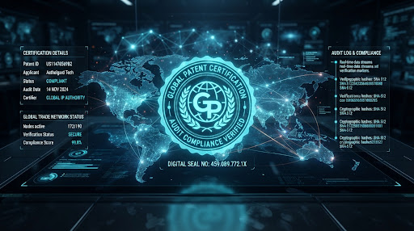

Ar-Ge Projelerinizi Şeffaf, Akıllı ve Kontrollü Yönetin
ArgeP ile derin teknoloji ekipleri için proje takibi, bütçe yönetimi, kilometre taşı planlama ve mevzuat uyumlu işbirliğini tek platformda birleştirin.

Optik Sensör Entegrasyonu & Bütçe İlerlemesi: %82.4 Tamamlandı
Kurumsal Uyumluluk Standartları
TÜBİTAK • Sanayi Bakanlığı • Teknopark • Ar-Ge Merkezi
Ar-Ge Yaşam Döngüsünün Her Katmanında Eksiksiz Denetim
Dağınık elektronik tabloları ve parçalanmış araçları sonlandırın. Mühendislik ekipleri, mali müşavirler ve proje yöneticileri için tek bir gerçeğin kaynağı.
Kapsamlı Proje Takibi
Fizibilite, Ar-Ge doğrulaması, prototipleme ve ticarileşme aşamalarını eş zamanlı yönetin. Çevik (Agile) sprint yapıları ile klasik Ar-Ge şelale modellerini hibrit mimaride birleştirin.
Gider ve Bütçe Yönetimi
Personel adam/ay harcamaları, malzeme alımları ve danışmanlık giderlerini 5746 sayılı kanun formatında otomatik ayrıştırın.
Dönüm Noktası (Milestone) ve Gantt
Kritik teslim tarihlerini kaçırmayın. Dinamik bağımlılık zincirleri ile gecikmeleri aylar öncesinden öngörün ve ekibi uyarın.
Yapay Zeka Destekli Raporlama & Analitik
TÜBİTAK ara raporları ve denetim dökümanları tek tıkla hazır. LLM tabanlı Ar-Ge asistanı, proje çıktılarından otomatik akademik & teknik özetler derler.
"2024-Q3 Faz 2 Değerlendirmesi: Proje hedeflerinin %89'una ulaşıldı. 2 adet patent başvurusu hazırlandı ve EPO standartlarına göre indekslendi."
Fikir Aşamasından Küresel Patentli Ürüne
Ar-Ge süreçlerindeki bürokratik engelleri ve veri kayıplarını sıfırlayan akıcı 4 aşamalı ekosistem yaklaşımı.

Fikir & Literatür Taraması
Teknik hipotezlerin oluşturulması, küresel patent veri tabanlarında ön araştırma ve fizibilite skoru hesaplaması.
Bütçe & Teşvik Modelleme
Hibe programları, TÜBİTAK 1501/1507 uyumlu maliyet kalemleri ve personel zaman tahsis matrislerinin çıkarılması.

Laboratuvar & Prototip
Deneysel bulguların, test loglarının ve sprint görevlerinin güvenli kriptolu veri odalarında gerçek zamanlı takibi.

Denetim & Ticarileşme
Yeminli mali müşavir onayları, bakanlık portalı entegrasyonu ve fikri mülkiyet tescil süreçlerinin tamamlanması.
Türkiye'nin Öncü Ar-Ge Merkezleri ArgeP ile Güvende
Havacılık, otomotiv, biyomedikal ve savunma sanayii liderlerinin saha tecrübeleri.
"ArgeP öncesinde 40'tan fazla araştırmacının adam/ay saatlerini takip etmek ve bakanlık denetimlerine hazırlanmak haftalarımızı alıyordu. Şimdi denetim raporlarını dakikalar içinde üretiyoruz."
Dr. Ahmet Kaya
Ar-Ge Direktörü, Savunma & Havacılık
"Bütçe aşım riskleri konusunda yapay zeka uyarı motoru şirketimize bir yılda 2.4 milyon TL gereksiz harcama tasarrufu sağladı. Mühendislerimiz için arayüz harika."
Ece Soylu
Finans & Hibe Yöneticisi, BioTech Labs
"Patent yaşam döngüsü ile proje kilometre taşlarını aynı ekranda eşleştirebilmek inovasyon ekibimizin stratejik çıktı hızını tam %45 oranında artırdı."
Mehmet Yılmaz
Teknoloji Transfer Ofis Başkanı
Ar-Ge Ekibinizin Verimliliğini Bir Üst Seviyeye Taşıyın
Kurumunuza özel canlı simülasyon ve ArgeP platform demosu için uzman mühendis ekibimizle bugün tanışın.